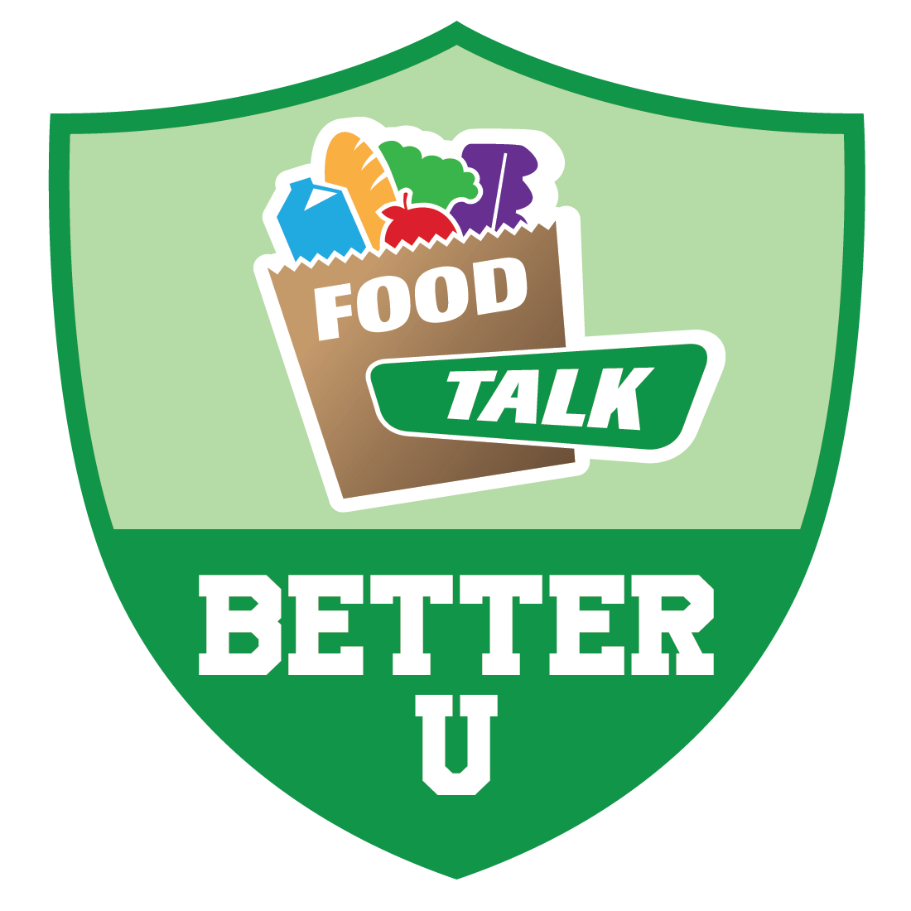

This is an e-learning course I built for the University of Georgia's SNAP-Ed (Supplemental Nutrition Assistance Program Education) initiative, which works to improve the likelihood that persons on SNAP or eligible for SNAP-Ed will make healthy food and lifestyle choices that prevent obesity.
Click the logo to play the course.
